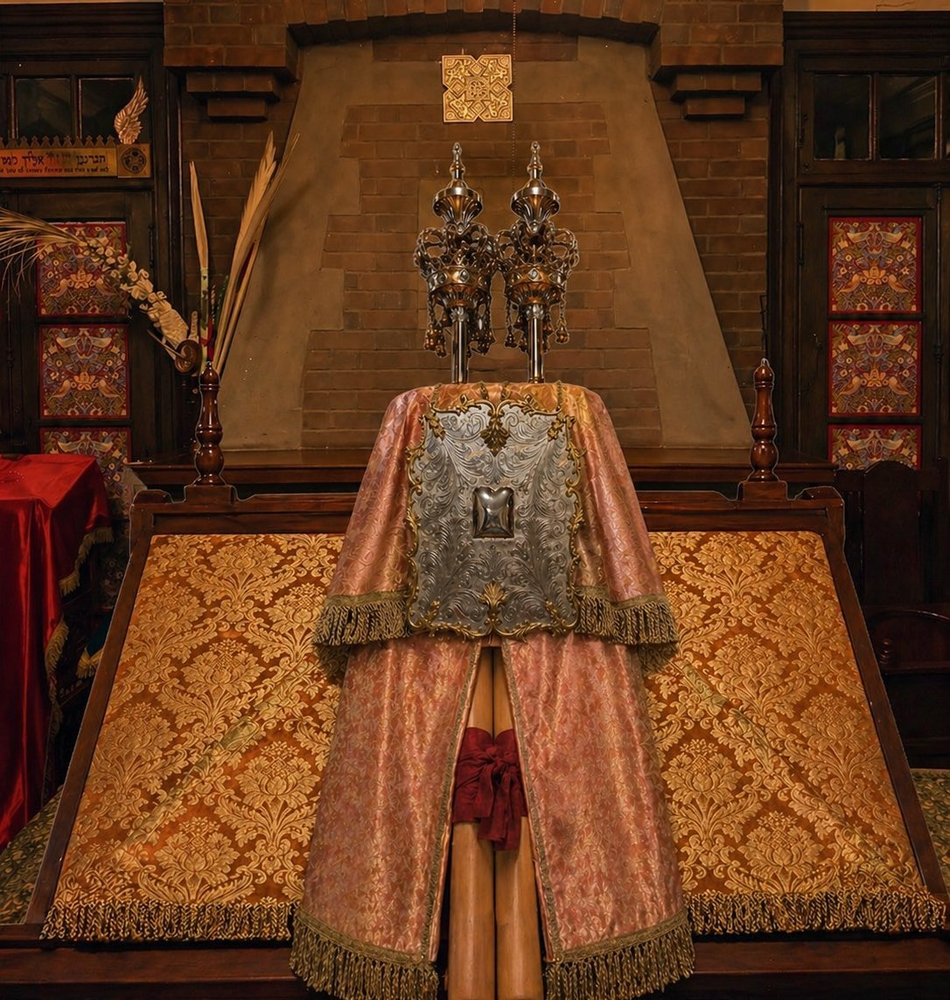

Shabbat Mornings
Every word said aloud. No mumbling.
You will always know what page we are on.
Schedule of service times
We generally meet biweekly as above, subject to change.
This Shabbat · Saturday, 28 November 2026 · 18 Kislev 5787
Shabbat Parashat Vayishlah
No services will be held this week
We meet in a private home. Please be in touch before your first visit.

What makes us different?
Traditional, but egalitarian.
Everyone welcome, all included.
Halakhic (Ritual) Times — Poughkeepsie, NY 41.70 N 73.92 W
Vayishlah, Genesis 32:4–36:43.
Jacob comes home. He sends messengers ahead to Esau, divides his camp in fear, prays, and sends droves of animals as a gift. Alone at the ford of the Yabbok he wrestles until dawn with a man the tradition reads as an angel, is given the name Israel, and goes on limping. Esau runs to meet him, embraces him, and they weep. Then the dark chapter at Shechem and Dinah, the return to Bethel and the burying of the alien gods, Rachel's death as Benjamin is born, Isaac's burial, and the generations of Esau in Seir.
For further discussion of the Parasha, listen to Rabbi Joseph Dweck: Wrestling with the World
Haftarah: Obadiah 1:1–21. Ashkenazim and Sephardim read the same passage.
Obadiah, the shortest book in the Prophets, speaks about Edom, the people descended from Esau. They live high in the clefts of the rock and think no one can bring them down; the Eternal says otherwise. The charge is specific: on the day Jerusalem fell, Edom stood aside, looked on with pleasure, took spoil, and cut down those escaping. The prophet promises that the house of Jacob will be restored and will hold its own land again, naming even the exiles in Sepharad — a verse Spanish Jews long read as their own. Dominion belongs to the Eternal.
Friday, 4 December — Hanukkah, first candle.
Saturday, 5 December — Hanukkah, second candle.
KKZZ is free to join, there is no membership fee, and we never solicit contributions from members, students, parents or alumni. You may, if you wish, sponsor a meal or contribute to the work of the Congregation. Kehillah Kedoshah Zikhron Zvi is a tax-exempt charitable organization under Section 501(c)(3) of the Internal Revenue Code; offerings are tax-deductible to the extent permitted by law.
No services this week or next week. We look forward to seeing you on December 5 for a Shabbat Hannukah service.
The Rambam rules that the Hanukkah lamp is kindled at sunset — not earlier, not later — and that one who has missed the hour may still light while there are passersby in the street, about half an hour.1 This year the first light falls on Friday, when sunset is also the coming in of Shabbat. The Hanukkah lamp is kindled first, before the Shabbat candles, with oil enough to burn well into the night. The Rambam also rules that when a person can afford only one, the oil for the Hanukkah lamp comes before the wine for kiddush, because it makes the miracle known.2
Communities differ over when the blessings are said. In London and Amsterdam all three blessings are recited on the first night before anything is kindled, and the two blessings on the nights after; in the Land of Israel, in the Sephardic East and in the cities of the Maghreb one says the blessing for kindling, begins to light, and says the rest while lighting.3 The Sephardic order is to kindle the new light of that night first, then turn back and light the lights of the nights before.4
1. Mishneh Torah, Scroll of Esther and Hanukkah 4:5 2. Mishneh Torah, Scroll of Esther and Hanukkah 4:13 3. Keter Shem Tob, vol. 2, p. 522, se'if 13 4. Keter Shem Tob, vol. 2, p. 521, se'if 10
Jacob was left alone, and the Torah does not say why. Rashi says he had forgotten some small jars and went back over the ford to fetch them.1 The midrash fills in the scene: the one who wrestled with him first appeared as a herdsman, and the two crossed their flocks and went back together to see whether anything had been left behind.2 Two sages, finishing their business at the gates of Tyre, turned back in the same way and found a bundle of silk; they said they had the practice from Jacob. In the week Hanukkah begins, a small flask nobody counted gives light for eight days.